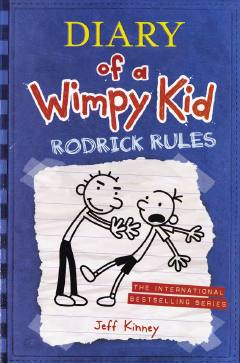

DOGreg Xefflining akasi Rodrik bilan bog'liq kulgili maktab hayoti sarguzashtlari.
Greg Heffley o'zining yangi maktab yilini boshdan kechirmoqda va bu safar uning akasi Rodrik bilan bo'lgan munosabatlari asosiy mavzuga aylanadi. Kitob Gregning kundalik yozuvlari orqali o'smirlik davridagi qiziqarli va kulgili voqealarni hikoya qiladi.